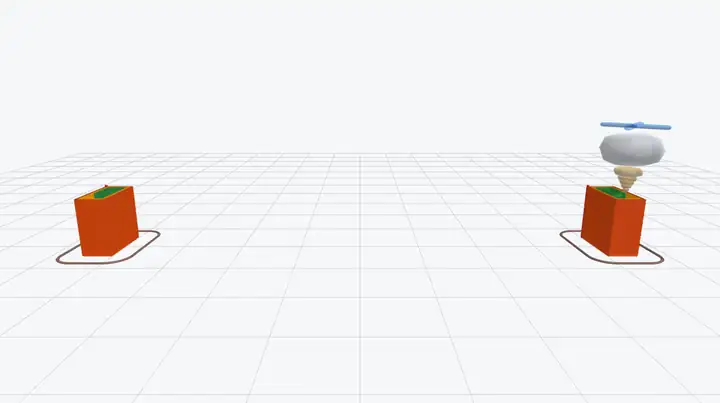
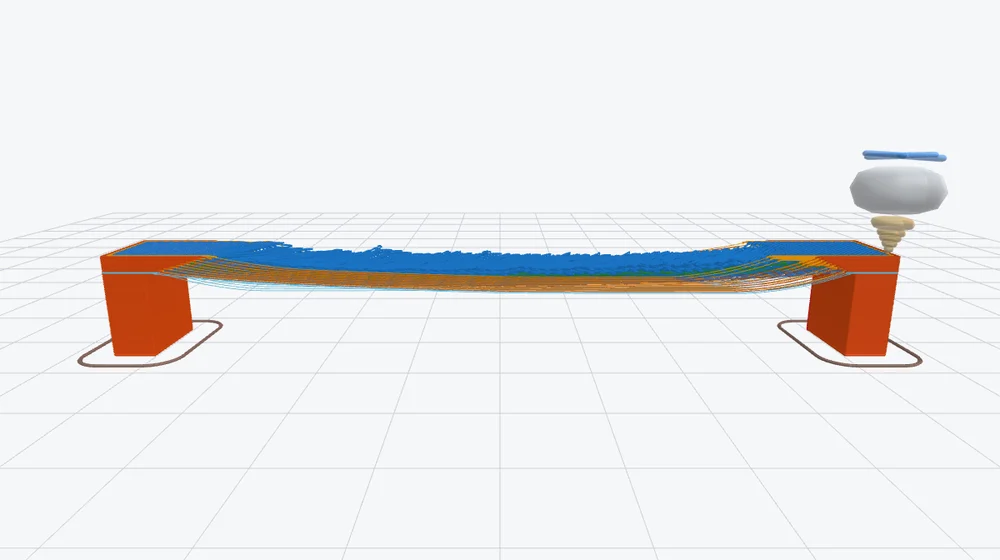
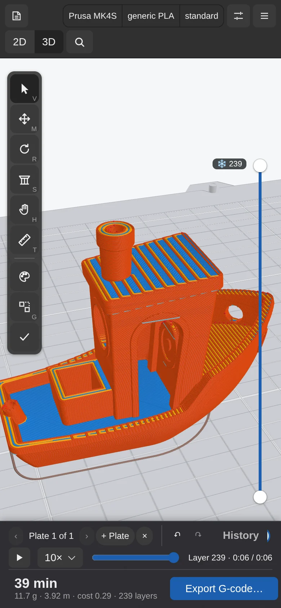

Features
14The best features
zslice shows the print as the plastic forms it, and the parts obey physics. Pick a feature, and go to its page.

See the print before you print it

The print as it forms. zslice simulates the plastic as it leaves the nozzle. It cools with the fan, and it sags or falls where no plastic holds it. A bridge sags, and a slab over the air falls in strands. Go to the page.

Parts with real physics. A part that cannot stand falls over onto a face, as on a real bed. Drag a part with the gizmo of the Move tool. Let go, and it rests flat. Go to the page.

A support editor. Click an overhang to put support under it. Drag the dots of tree support to move the branches. zslice keeps each branch within the rules. Go to the page.

Edits at full speed. Drag a slider, and the print slices again while you drag. A change slices only what it needs: a new infill density for a Benchy slices in about 60 ms. The view stays at full speed. Go to the page.

Click a line, see why. Each line tells what it is, its real speed, and the reason when it is slow. Change a setting on the card. Go to the page.

printdeck projects. Open a repository of parts from GitHub. zslice puts the parts on plates, with their printer, profile, and material. Go to the page.
More

Gaps and checks. See each area that no line covers, and the settings that close it. Check lists what can make the print fail. Go to the page.

In your browser. The same core runs in WebAssembly at zslice.beetlebug.org. Your files stay on your computer. Go to the page.

A history in words. Each change is a step in the History list. Go back to any change, or undo one setting and keep the later changes. Go to the page.